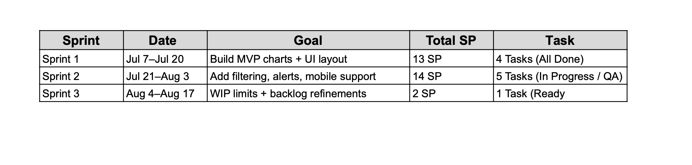
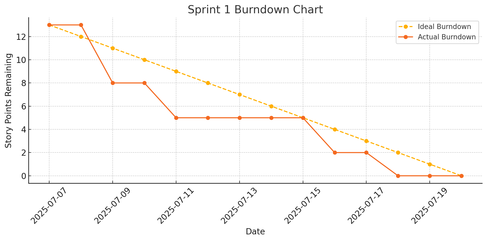
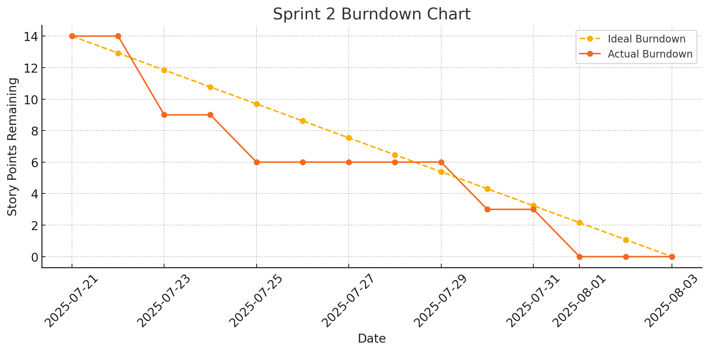
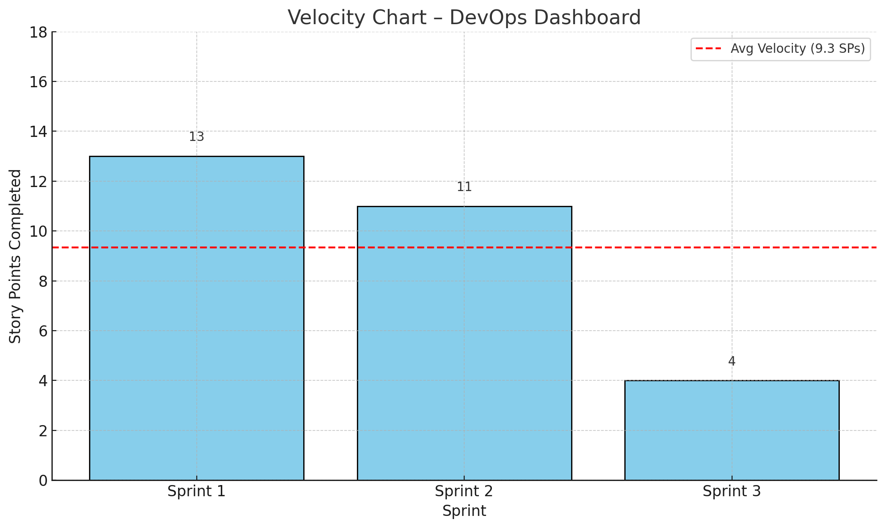
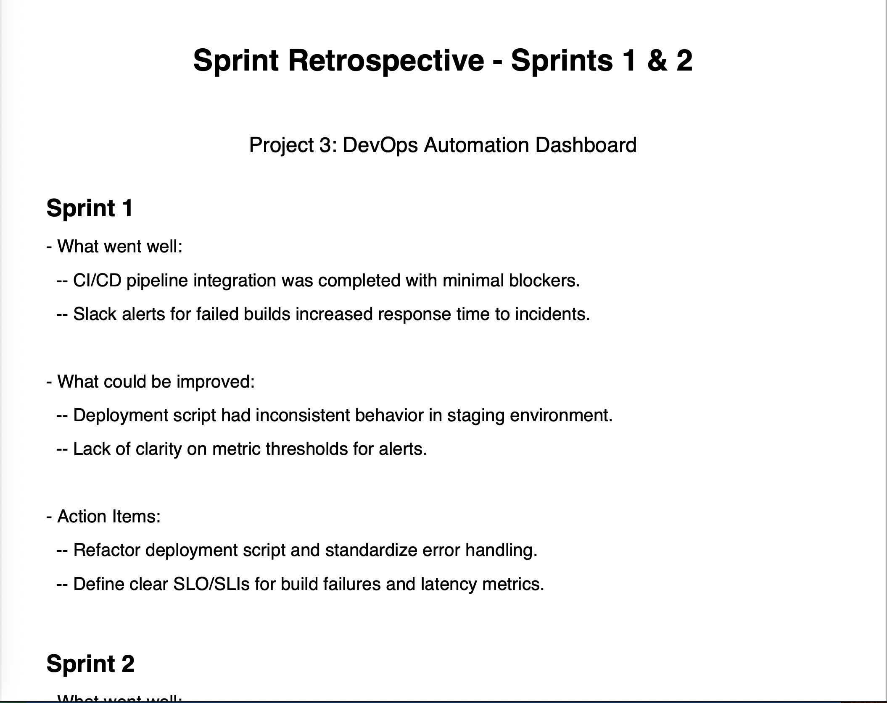

Product Vision
Build an internal dashboard for DevOps teams to visualize build pipeline health, deployment metrics, and active incidents — improving visibility, reducing time-to-resolution, and supporting CI/CD best practices.
Sprint Plan
Click below to view the Sprint Planning PDF in fullscreen.

Sprint Planning (PDF)
Agile Metrics
Click below to view Agile reports in fullscreen.

Burndown Chart (Sprint 1)

Burndown Chart (Sprint 2)

Velocity Chart
Interactive Kanban board
This is the live Kanban board powered by Monday.com. You can explore tasks, user stories, and priorities in real time.
Sprint Retrospective – Sprint 1 & 2
Click below to view the PDF in fullscreen.

Sprint 1 & 2 Retrospective (PDF)
✔️ Definition of Done (DoD)
- Code committed and merged
- Unit tested with >80% coverage
- Peer-reviewed
- Deployed to staging environment
- Demoed and accepted by Product Owner